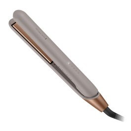
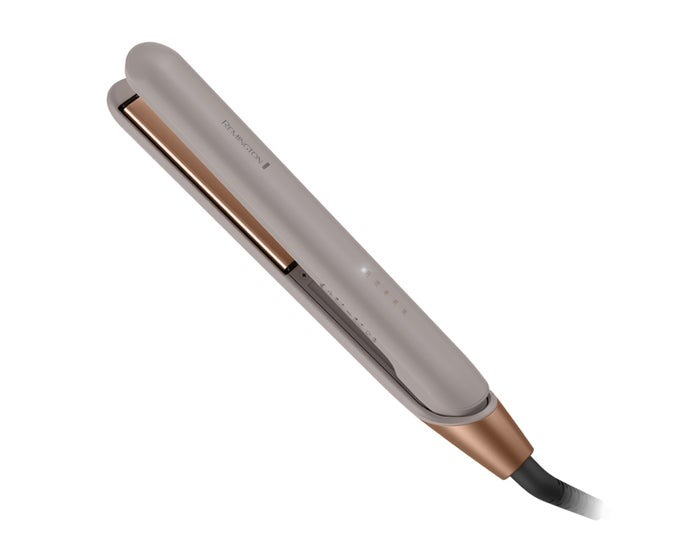
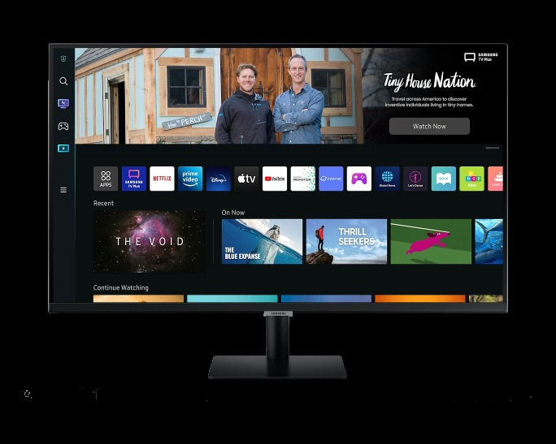

Remington · Modelo S31A
El modelo S31A de Remington está pensado para un uso práctico y funcional. Entre sus características destacan Refrigeración Refrigeradoras Top Freezer Side By Side Bottom freezer French door Frigobares Congeladoras y Exhibidores Vineras; Refrigeradoras; Top Freezer; Side By Side.
| Atributo | Detalle |
|---|---|
| Precio | S/ 159.00 |
| Marca | REMINGTON |
| Modelo | S31A |
| Temperatura máxima de trabajo | 230 ºC |
| Velocidad de calentamiento | 15 segundos |
| Apagado automatico | Sí |
| Luz de encendido | Sí |
| Cable retráctil | No |
| Inalámbrico | No |
| Material de la placa | Cerámica |
| Cable giratorio | Sí |
| Alimentación | Red eléctrica |
| Garantía del proveedor | 2 años |
Fuente principal: https://hiraoka.com.pe/plancha-para-cabello-remington-s31a